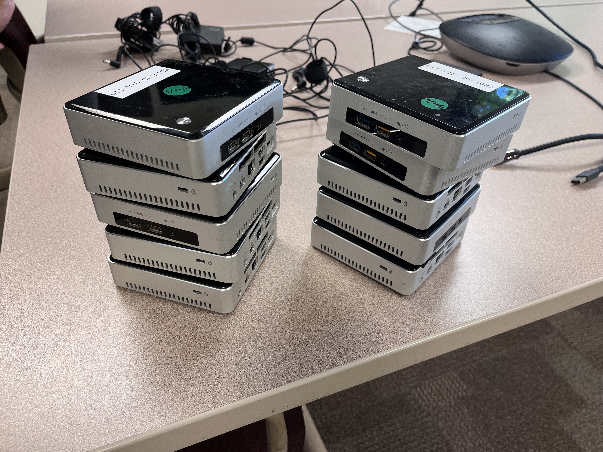
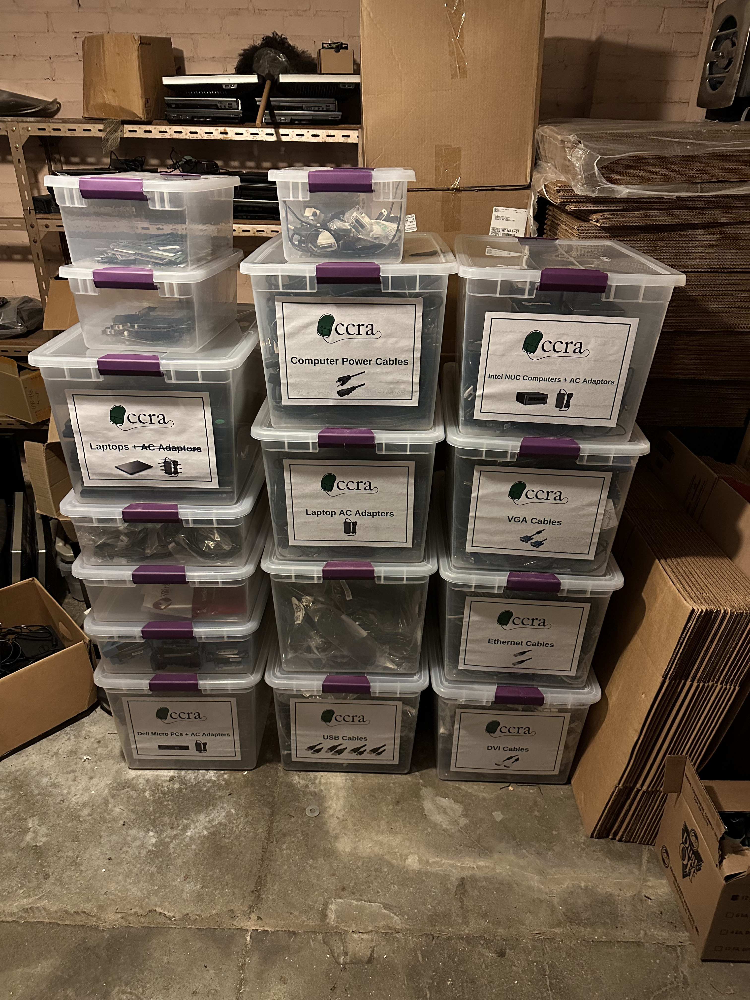
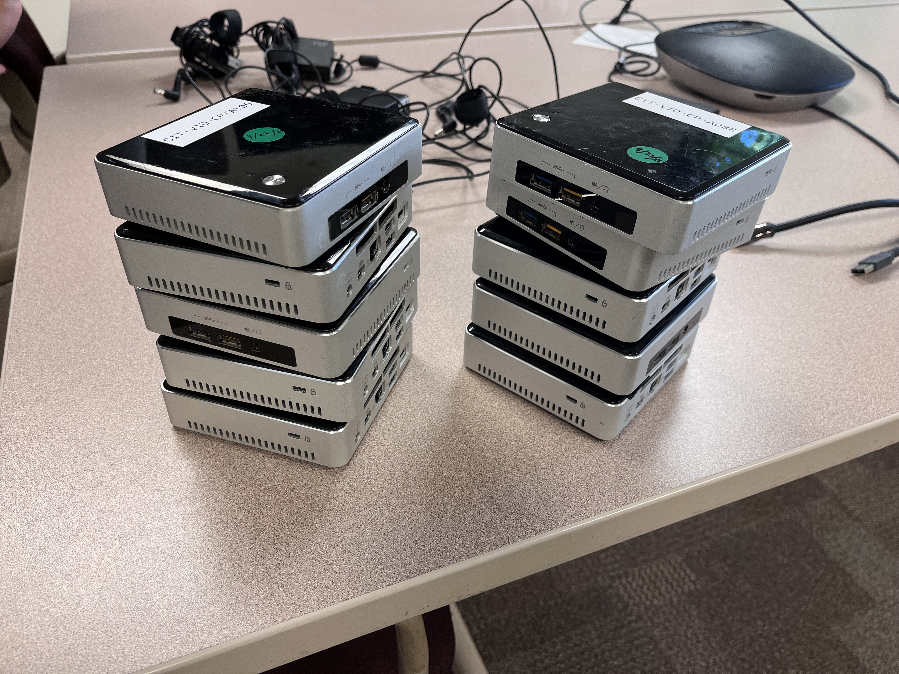
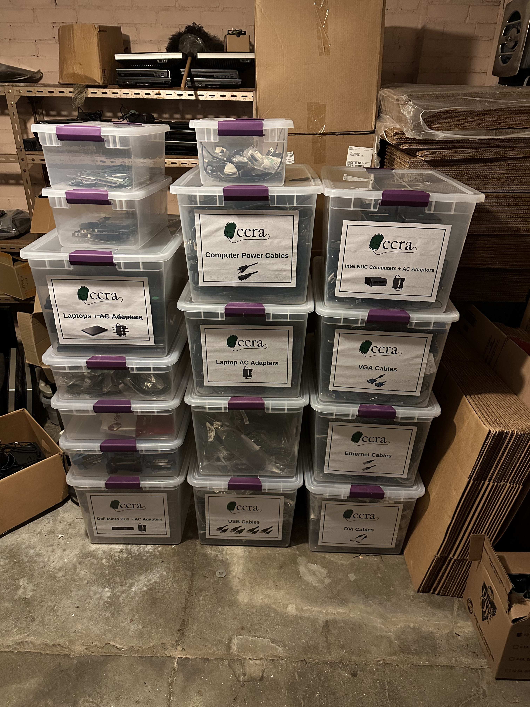

Welcome To The Extracurriclars
Welcome to the Extracurriclars page, here you'll view most of the
extracurricular activities that I had partaken in!
Scroll down to see further.
Fashion Magazine
During the FAll of 2024 semester, I applied to Cornell's premium Fashion Magazine organization named THREADS.
I specifically applied to be a photographer as well as a model!. Thankfully I was able to model for one of the shoots named 'Crosstown Traffic',
as well as photograph for another shoot named 'Golden Years'.
Please click on the images to see the full picture!
CCRA - Computer Hardware Salvation
CCRA is an amazing club in which students whom are enthusiastic about computer hardware,
can harness their knowledge of computers for a great cause!
In CCRA all computer components that are salvaged from old PC's are used to build and complete
newer systems that are then donated to schools and charity organizations that need them!
Personally, I deeply love building computers, I see the activity as a fun and intruging one! My personal Gaming pc Was built by myself.
Thus, naturally I gravitated towards CCRA as I was practicing one of my passions, while for a charitable cause!
 



DGA - Game developement Club
I find Game developement to be one of the prime reasons as to why I even started learning CS.
Therefore, I found it to be a "no brainer" to join the game development club!
Amongst the many workshops and activities that the club held,
I found myself attending one of their game jams as a means to immersing myself in the game dev world!
Where I learned to use Unity on the fly, or really for 24 hrs we were given to create anything themed under Valentines day!

Arab Student Community
The Arab student Community In Cornell is a grand, riveting, and welcoming one! I made it a must to attend as many events held by the community as it is a great oppurtunity to meet and learn about many students from various backgrounds! I'm happy to even say that I had made some of my best friends in Uni due to attending these events, so I will always be grateful for them!


Photography
Throughout my life, I always had that cinematic itch in which I would see a certain 'scene'
appear before me, in which I naturally reach for my camera, and take the shot!
Please, click on the images to see them in FULL GLORY!
.JPG)
.JPG)
.JPG)
.JPG)
.JPG)
.JPG)
.JPG)
.JPG)
.JPG)
.JPG)
.JPG)
.JPG)
.JPG)
.JPG)